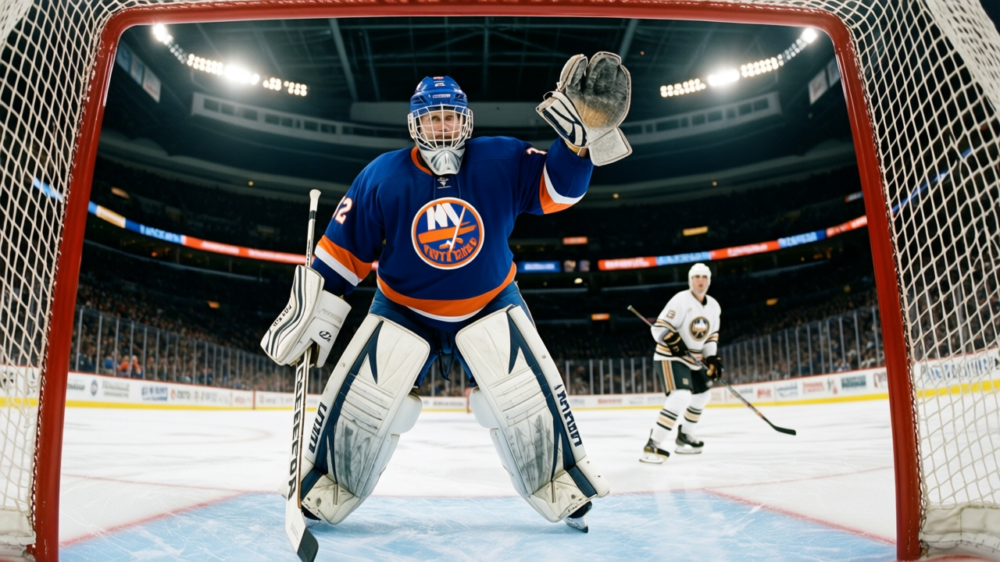

 NYI
NYIAt 23, we finally know who he is: Rick DiPietro, 19 of 20 wins, and the tools that were always there
Drafted first overall at 18, watched for four years on a team that could not win. Now the Book's base is 79, the Index is +4, and the Islanders are alive because of him.
 Carol BinghamFeatures writer · Rinkside
Carol BinghamFeatures writer · RinksideThe New York Islanders are 20-19-2. They score 151 goals and give up 156. They are 10th in the Eastern Conference on a night when nobody at the table is watching them. They are alive because of a 23-year-old goaltender from Lewiston, Maine, who won 19 of their 20 games and who, at $1.10M with one year left on his contract, might be the cheapest thing on the ice right now.
 Rick DiPietro84 was the first pick of the 2000 draft. He played one season at Boston University, won the Beanpot MVP, took the Eberly Trophy as the tournament's top goaltender, and was named Hockey East Rookie of the Year. He was 19 when the Islanders drafted him. The room expected the next thing immediately.
Rick DiPietro84 was the first pick of the 2000 draft. He played one season at Boston University, won the Beanpot MVP, took the Eberly Trophy as the tournament's top goaltender, and was named Hockey East Rookie of the Year. He was 19 when the Islanders drafted him. The room expected the next thing immediately.
It did not come immediately. His first NHL game was January 27, 2001, against Buffalo. He played 20 games that season and won 3. The following year he played 10 and played one playoff game. He was called up permanently in 2003-04 and went 7-12-0 in 21 starts. Four years of a first-overall pick who could not win.
The tools were never the question. The Book has his hands at 99, his agility at 98, his speed at 95. Those are the numbers that made him the first pick, and they have been in the book since he was 20. What was missing was everything below the crease line: toughness at 50, fighting at 51, pad level at 51. A goaltender who wins with his hands still has to learn what the rest of his body does in April, when the saves that win games come from position and discipline, not reaction. That kind of development is slow. It comes in the years between 22 and 24, when the body fills into the frame and pad discipline becomes a habit built by reps rather than instruction.
This season the pad level is still 51. But the hands are making more saves than they did last year, and the record shows it. 33 games. 19 wins. 11 losses. A 3.13 GAA. A 0.869 save percentage. He has 0 shutouts, which is its own small frustration for a room trying to build something: the games are close, the margin is always one or two, and DiPietro is good enough to keep them there but not yet good enough to lock them.
Garth Snow, the backup, played 10 games and won 1. DiPietro has 19 of the team's 20 wins. The club's record without him is 1-8-2. The Islanders scored 30 goals in their last 10 games and gave up 29. They are 6-4 in that stretch, including a three-game win streak that started January 9 against Philadelphia. He was in net for 33 of their 43 games.
The Development Index has him at +4, one of the risers. His base is 79, his current overall is 84. The potential in the Book is 99, which is the highest number attached to any player under 23 in the league. That number has been there since his rookie year. The Index is the measure of what the season says right now. The jump from 79 to 84 is not enormous, but it is the first time the form term has agreed with the draft.
The contract he is about to get
One year left. $1.10M. Morale 94. He is a pending free agent at the end of this season. The contract-year class lists 30 goaltenders with one year remaining, and DiPietro is in it at 84 overall, the 14th highest-graded on the list. But his salary, at $1.10M, is the seventh-lowest among the 38 goaltenders in that class.  Pascal Leclaire86 at 86 overall costs the same. Ari Ahonen86 at 86 overall costs $0.80M. These are young goaltenders who are good and cheap and will not be cheap for long.
Pascal Leclaire86 at 86 overall costs the same. Ari Ahonen86 at 86 overall costs $0.80M. These are young goaltenders who are good and cheap and will not be cheap for long.
What happens in the market when a 23-year-old with a 99 potential finishes a 19-win season on a club that needed him to win 19 of 20? The Book cannot price that. The Index is +4 today; the Index is a form term and form terms move. But the underlying facts do not move. He is 23. His hands are 99. He won 19 games for a team that would have been 1-27-2 without him. He has one year left at $1.10M.
The Islanders have had him since he was 18. Four years of watching the tools and not seeing the wins. He went 3-15 in his first season here. Then 10 games. Then 7 in 21. This is the fifth year. The record does not call him new. The room is his. The 19 wins are the first ones that look like a beginning.
The Islanders score 151 goals in 43 games. They are outscored by 5. Their last 10 is 30 for and 29 against, a coin flip. Every goal differential in the building this season is DiPietro's doing. The Development Index has him at +4, the potential says 99, and the price says $1.10M with one year left. The question is whether the Islanders can reach the market before June.